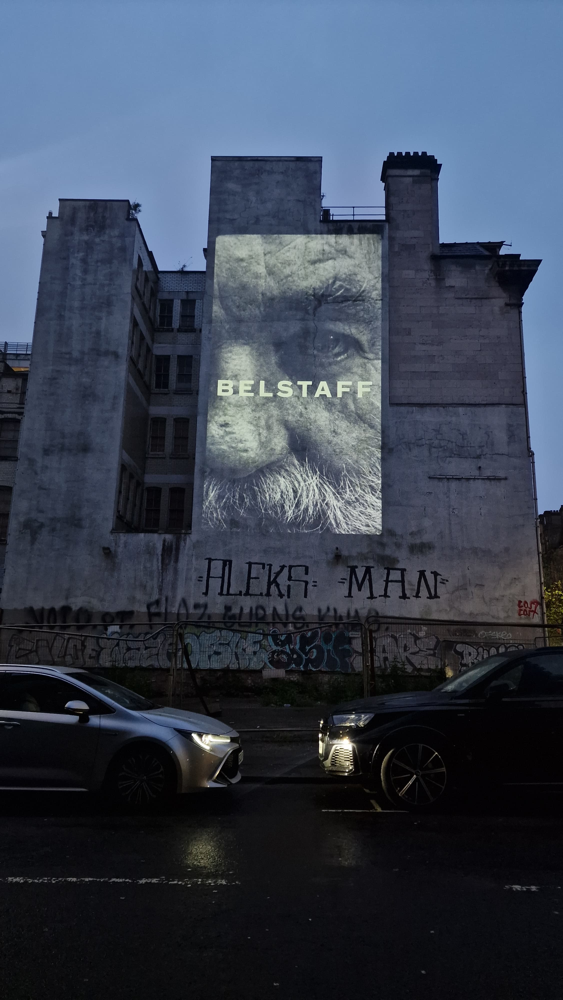

02 / Portfolio
Belstaff
Projection Mapping
Projection-mapped portraits for Belstaff, scaled onto city buildings at night. A face and the wordmark land across towers and brick walls, shot from the street and from up close on the facade.

02 / Portfolio
Projection Mapping
Projection-mapped portraits for Belstaff, scaled onto city buildings at night. A face and the wordmark land across towers and brick walls, shot from the street and from up close on the facade.
